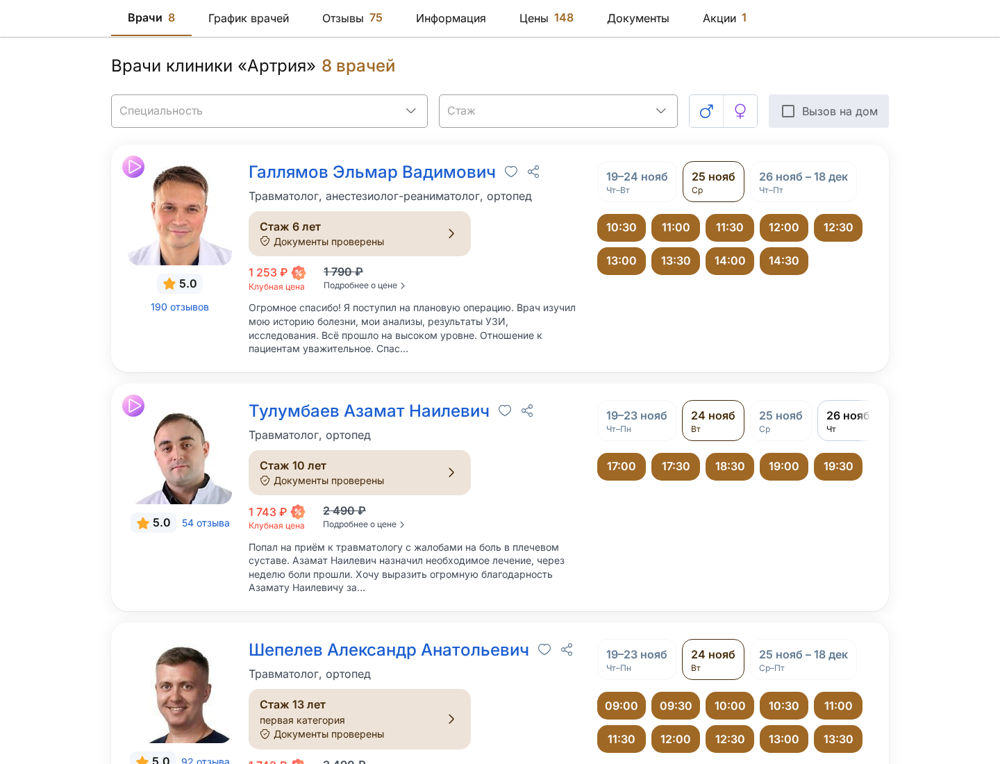
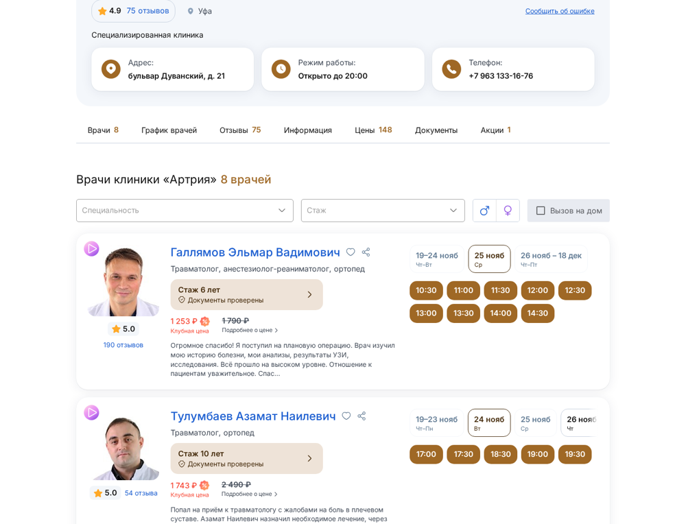
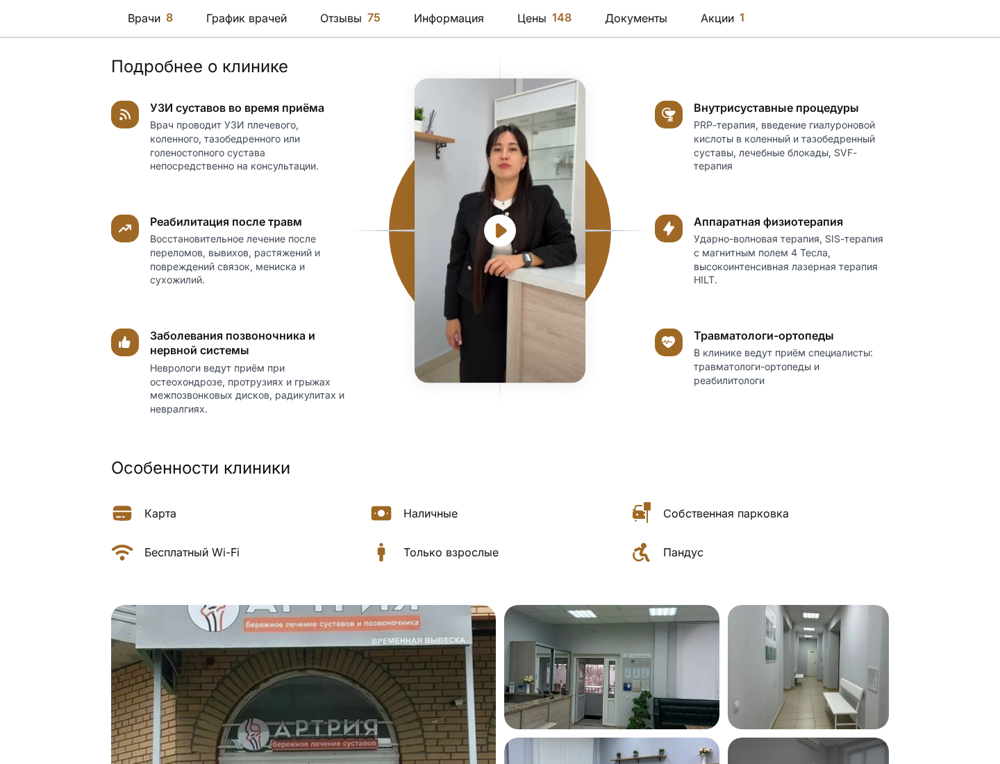
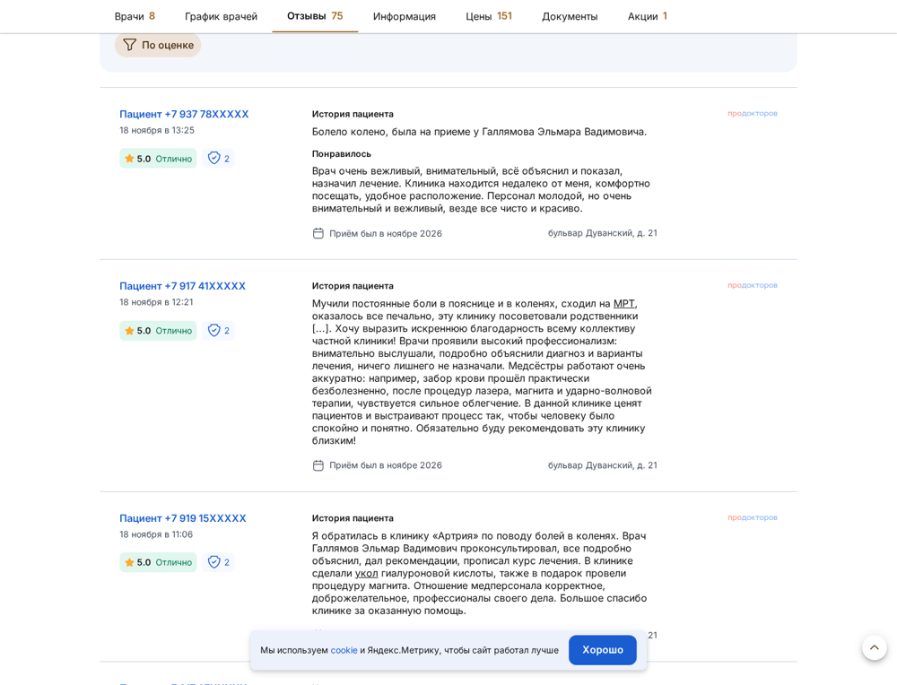
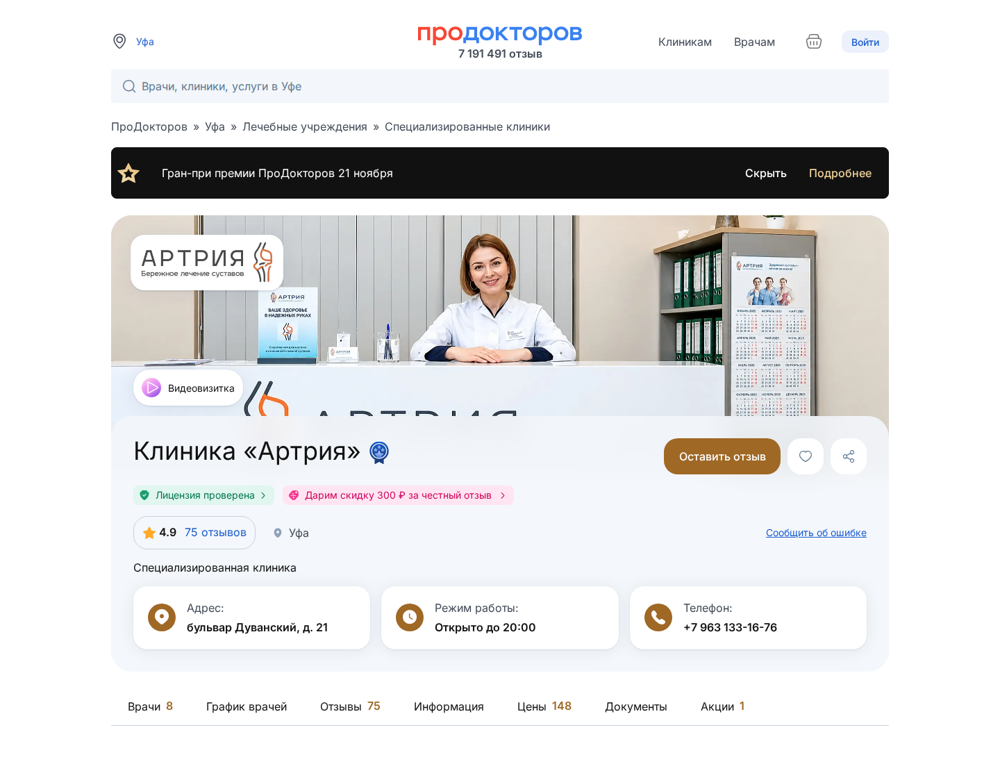
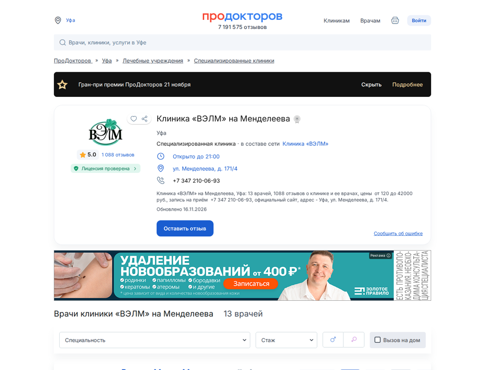
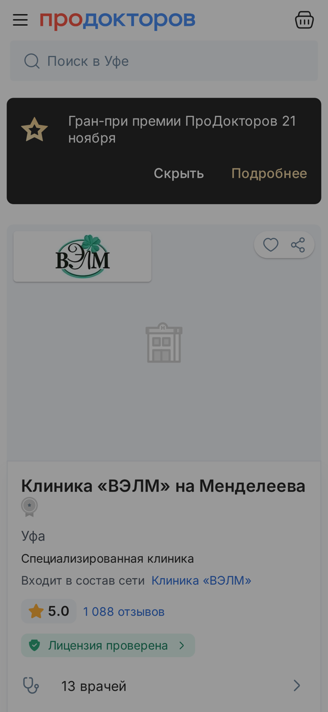

Разбор карточки на ПроДокторов
Площадки берут деньги вперёд. Пациент идёт к тем, кто выше в списке. Я открыл вашу карточку так, как её видит человек, который прямо сейчас выбирает куда записаться. Ниже на скринах вашей карточки видно, где утекают записи и кто их забирает. За каждую утёкшую запись вы уже заплатили площадке. Я веду свои клиники на ПроДокторов и прохожу эти грабли сам.
Снимок карточки
Вот что видит пациент в вашей карточке. Каждый показатель ниже это не спортивная таблица, а записи, которые вы либо забираете, либо отдаёте соседу по списку.
Балл ранжирования ~308–358 из 650, до 650 не хватает ~292.
Последний отзыв 18 ноября 2026, 1 дн. назад.
Упущено позиций в карточке 2.
Карта баллов ПроДокторов
Позиция в общем списке города складывается из баллов ранжирования до 650. Каждая позиция вниз это пациенты, которые тапнули на клинику выше вас. Они уже искали врача, дошли до списка, но записались не к вам. Самый красный резерв сверху, с него и начинаем.
| Параметр | Сейчас | Баллы | До цели |
|---|---|---|---|
| Успешность записи в клинику за 30 дней | нужен кабинет | — / 100 | добрать |
| Доступность записи ≥15 часов в сутки | нужен кабинет | — / 50 | добрать |
| Звёздный рейтинг (звёзды×30) | ◐ частично | 147 / 150 | +3 |
| Онлайн-запись на услуги | ✓ есть | 3 / 100 | ✓ держать |
| Онлайн-запись к врачам | ✓ есть | 8 / 100 | ✓ держать |
| Автоматическая выгрузка цен | ✓ есть | 20 / 20 | ✓ держать |
| Клубная запись (Клуб ПроДокторов) | ✓ есть | 70 / 70 | ✓ держать |
| Запись по телефону | ✓ есть | 50 / 50 | ✓ держать |
| Видеовизитка | ✓ есть | 10 / 10 | ✓ держать |
В личном кабинете клиники, раздел «Ранжирование клиники». Там общий балл и баллы по каждому из девяти критериев; стрелка рядом с пунктом раскрывает, за что он начисляется. После изменения (включили запись, загрузили видеовизитку) баллы пересчитываются в течение 10 минут.
Два критерия видны только в кабинете: успешность записи за 30 дней (баллы начисляются от 75 %, по 4 за каждый процент) и доступность записи (16 часов в сутки дают 8 баллов, 21 час и больше дают 50).
Правила начисления: справка ПроДокторов «Балльная система ранжирования клиник».
Как выглядит ваша карточка



Видеовизитка есть у 6 из 8 врачей. Остальным 2 стоит снять ролик 15–60 секунд, вертикальный: это +10 к личному рейтингу врача (770) и подъём в списках врачей, где пациент ищет конкретного специалиста.
Поток отзывов
Отзывы это главный сигнал доверия и топливо рейтинга. Рейтинг карточки складывается наполовину из отзывов о клинике, наполовину из отзывов о врачах — на графике оба потока по месяцам. Вес отзыва со временем падает, поэтому важен ровный поток.
На графике — последние 24 месяца (о клинике 53, о врачах 22; врачебные — половина рейтинга, но зависят от удержания врачей); медиана ~15/мес (за последние полные месяцы). Последний отзыв 18 ноября 2026, 1 дн. назад.
Ориентир по вашему штату (8 врач.): минимум 17 отзывов в месяц, и постепенно наращивать (сейчас медиана ~15/мес). Это не рывок и не бюджет, а система: ссылка пациенту сразу после приёма, правильный момент просьбы, работа администратора по скрипту.
Наращивайте плавно. Собирайте только реальные отзывы живых пациентов (через МИС, метка «Отзыв проверен»): модерация строгая, 30–35% отзывов отклоняется, а резкий скачок «с нуля до десятков» площадка и конкуренты видят как аномалию — повод для проверки или жалобы. Заказные/накрученные отзывы — обнуление рейтинга и блок карточки на 3 года, откатить нельзя. Плавный рост реального потока безопасен и так же поднимает рейтинг.

Сравнение с карточкой-ориентиром
Рейтинг 4.9 — там, где решает качество, вы уже сильны. Поток отзывов свежий. Объём отзывов — это вопрос темпа, а не потолка: разрыв берётся ровным потоком из месяца в месяц, машиной отзывов, а не бюджетом и не рывком. Это достижимо. Ниже видно, где именно разрыв.


| Параметр | Вы | «Клиника „ВЭЛМ“ на Менделеева» | Вывод |
|---|---|---|---|
| Рейтинг | 4.9 | 5 | ваш рейтинг ниже 5.0, тянется свежими отзывами |
| Отзывы | 75 | 1 088 | ×14.5 больше отзывов у карточки сравнения |
| Врачей в карточке | 8 | 13 | больше точек входа пациента |
| Видеовизитка | ✅ | ✗ | есть, держите |
| Клуб ПроДокторов | ✅ | ✅ | в Клубе |
| Медали / награды | ✅ | ✅ | есть |
Цифры по публичным карточкам ПроДокторов. Отзывы и врачи достоверны, обвязка в листинге может быть неполной. Карточка для сравнения — прямой конкурент по профилю: врачи тех же специальностей (травматолог, ортопед) и общие профильные услуги; из таких — с наибольшим числом отзывов. Это не оценка качества.
Пациент в вашем районе сравнивает карточки и идёт туда, где больше свежих отзывов и полнее карточка. Каждый месяц без ровного потока — это записи, которые уходят соседу. Решение — системный сбор отзывов и дозакрытие баллов 650. Бюджет тут не главный рычаг; горизонт берётся процессом — это то, что мы отстраиваем вместе.
Кто рядом с вами
Это ваше реальное конкурентное поле: 51 клиник рядом, за тех же пациентов. Отсортированы по числу отзывов, ваша строка выделена.
| Клиника | Дистанция | Рейтинг | Отзывы | Врачей |
|---|---|---|---|---|
| Клиника «Провены» | 4.98 км | 5 | 1 836 | 8 |
| Клиника «Мастерская Красоты» | 2.65 км | 4.7 | 1 309 | 7 |
| Клиника «Юхелф» | 0.97 км | 5 | 1 176 | 16 |
| Клиника «Доктор Вен» | 8.66 км | 5 | 1 123 | 7 |
| Клиника «Варикоза нет» | 4.55 км | 5 | 1 038 | 10 |
| Клиника «Giovane» | 0.3 км | 5 | 766 | 27 |
| Клиника «Стоп Варикоз» | 6.03 км | 5 | 636 | 10 |
| «Анг-клиник» | 1.41 км | 4.7 | 493 | 6 |
| Медицинский центр «Кластер Клиник» | 4.56 км | 5 | 476 | 17 |
| Клиника «Темед» | 3.48 км | 5 | 432 | 9 |
| Психологический центр «Псимед» | 6.26 км | 5 | 418 | 14 |
| «Клиника травматологии и реабилитации» | 5.69 км | 5 | 348 | 14 |
| Клиника „Артрия“ (вы) | 0 км | — | 75 | 8 |
Показаны 12 из 51 соседей по числу отзывов. рейтинг снят со звёздной шкалы списка. У клиник с большим числом отзывов он почти у всех 5,0, поэтому решает не он, а объём свежих отзывов.
Премия ПроДокторов
Медаль «Победитель премии ПроДокторов» получают клиники, которые стали одними из лучших в регионе по отзывам пациентов за год. Год премии длится с 1 ноября по 31 октября, итоги объявляют в начале ноября. В зачёт клиники идут только отзывы на странице клиники: отзывы на страницах врачей работают на премию врачей.
Медали клиники у вас пока нет. Ваши врачи стали победителями премии 2023, 2025, 2026: это их личные награды, в зачёт клиники они не идут. За год премии 2026 (01.11.2025–31.10.2026) на странице клиники опубликовано 40 отзывов о клинике и ещё 19 о врачах. С 1 ноября в зачёт премии 2027 идут уже 13 о клинике. Первый отзыв на карточке появился 17.08.2026: прошлый год премии вы прошли не целиком, а нынешний станет первым полным.
Это клиники города, где работают минимум двое врачей ваших основных специальностей (травматолог, ортопед) и есть общие профильные услуги (Блокада, Магнитотерапия, Пункция). «Профильная» значит, что такие врачи составляют не меньше трети штата, «многопрофильная» значит, что меньше. Отзывы о клинике посчитаны по их открытым лентам отзывов.
| Клиника | Тип | Профильных врачей | Отзывов о клинике за 2026 | С 1 ноября | Медаль клиники | Всего отзывов |
|---|---|---|---|---|---|---|
| Клиника „Артрия“ (вы) | — | 6 из 8 | 40 | 13 | нет | 75 |
| Клиника «ВЭЛМ» на Менделеева | профильная | 4 из 13 | 33 | 4 | 2022 | 1 088 |
| «Клиника неврологии и ортопедии» на Революционной | профильная | 5 из 15 | 10 | 2 | нет | 519 |
| «Клиника травматологии и реабилитации» | профильная | 5 из 14 | 73 | 3 | нет | 348 |
| Медицинский центр «Некогда болеть» | профильная | 4 из 11 | 24 | 1 | нет | 111 |
| «Клиника Фомина» на Кирова | многопрофильная | 2 из 90 | 91 | 8 | 2024, 2025, 2026 | 1 208 |
| Клиника «Медклик» (ранее «Многоклиника» («Травмы.нет»)) | многопрофильная | 6 из 40 | 24 | 0 | нет | 1 051 |
С 1 ноября вы собрали больше отзывов о клинике, чем любой прямой конкурент (13 против 8 у «„Клиника Фомина“ на Кирова»). Темп надо удержать на весь год. Планку задаёт «„Клиника Фомина“ на Кирова», победитель премии 2026: за год 91 отзыв о клинике, около 8 в месяц. Для медали ориентир: не ниже этого темпа все двенадцать месяцев.
Источники: справочник наград prodoctorov.ru/info/medal/, Положение о премии ПроДокторов, справка ПроДокторов «Сила отзыва», «Сбор отзыва через звонок», памятка для клиники о помощи пациенту при отзыве.
Реклама и ставки
Блок «Другие клиники города» на вашей карточке не показывается — пациент не видит ссылок на соседние клиники прямо у вас. Это плюс: такой блок крутится на тарифах «Лайт» и «Стандарт», а на «Профи» и выше его убирают. У вас он уже не уводит пациента к конкурентам.
Вы сами уже в спецразмещении. В общем списке раздела «Специализированные клиники» ваша карточка стоит на 3-м месте с меткой «Спецразмещение» (платных мест наверху списка: 3). Значит, вы платите за позицию каждый день. Сколько стоит это место и сколько записей оно приносит, видно только в кабинете: с этого вопроса и начинается разговор о ставках.
В платных разделах (дорогие услуги и приёмы узких специалистов) первые места это аукцион спецразмещения по второй цене: рекомендуемая ставка растёт от вчерашнего лидера. Для понимания порядка цифр: в крупном городе спецразмещение идёт от 1500 рублей в сутки за позицию. Ставку перебивают каждый день. Конкуренты уже платят, чтобы показываться рядом с вами. Точную ставку по вашим услугам в вашем городе я снимаю из вашего кабинета на этапе работы.
Тариф и оформление страницы
«Ультима» это старший тариф площадки. С 7 сентября 2026 года он даёт две вещи сверх «Профи»: брендированную страницу клиники и передачу данных о записях и расходах на ПроДокторов в сквозную аналитику. Для небольшой клиники это 2745 ₽ за 30 дней, на 915 ₽ дороже «Профи». Баллов ранжирования оформление не добавляет: оно работает на доверие пациента, который уже открыл вашу страницу.
| Что настраивается | Статус | Что видно на странице |
|---|---|---|
| Реклама конкурентов на странице | ✓ в порядке | не показывается: отключение входит в «Профи» и выше |
| Обложка | ✓ в порядке | загружена (видна в шапке на компьютере) |
| Фирменный цвет | ✓ в порядке | выбран #9F6825: им окрашены кнопки записи и акценты |
| Логотип | ✓ в порядке | стоит поверх обложки |
| Специализации | ◐ частично | 3 из 4, есть место ещё под 1 направление |
| Преимущества | ✓ в порядке | заполнено: 6 из 6 |
| Видеовизитка в блоке преимуществ | ✓ в порядке | преимущества выстроены вокруг видео клиники |
| Информационные баннеры | ✗ нет | не используются: место для фактических новостей вроде нового врача, новой услуги, графика |
Тексты брендированной страницы проходят модерацию площадки до 3 рабочих дней. Правила: только факты, без оценок, цен, призывов и сравнений с другими клиниками.
Деньги в этом тарифе возвращает сквозная аналитика: она сводит расходы на ПроДокторов с реальными чеками из вашей медицинской программы. Если она не подключена, «Ультима» работает только как оформление.
Состав тарифов сверен по личному кабинету площадки, раздел «Версия ПО», 19.11.2026; требования к брендированной странице — справка ПроДокторов «Брендирование страницы клиники».
Взгляд с телефона
Большинство пациентов открывают ПроДокторов с телефона. Это первый экран, по которому решают, записаться или листать дальше.

Я взял только то, что видит пациент в вашей карточке. То, что даёт записи, лежит глубже и снаружи его не видно в принципе: ваш точный балл ранжирования, реальная ставка аукциона по вашим услугам, расчёт во что обходится каждая позиция вниз. Снаружи диагноз, в кабинете деньги. Как снять эти цифры из кабинета, заполнить карточку на баллы 650 и собрать всю воронку клиники, разбираем по шагам в курсе ниже.
Всё выше это диагноз одного канала. Но пациент, который нашёл вас на ПроДокторов, дальше идёт по всей воронке. Он звонит в колл-центр, доходит до первичного приёма, слышит план лечения. Запись утекает не только в карточке. Она утекает на дозвоне, на администраторе, на первом приёме. Площадка приводит человека, а теряете его вы уже внутри клиники.
Я собрал разбор полной маркетинговой воронки клиники в курс «Аудит-конструктор воронки». Вы сами, по шагам, находите и закрываете места, где утекают деньги. Что входит:
4 модуля, проходите сами в своём темпе. 4990 ₽.
Карточка это вход. Деньги в клинике решает вся воронка. Соберите её по шагам.
Открыть курс «Аудит-конструктор воронки»